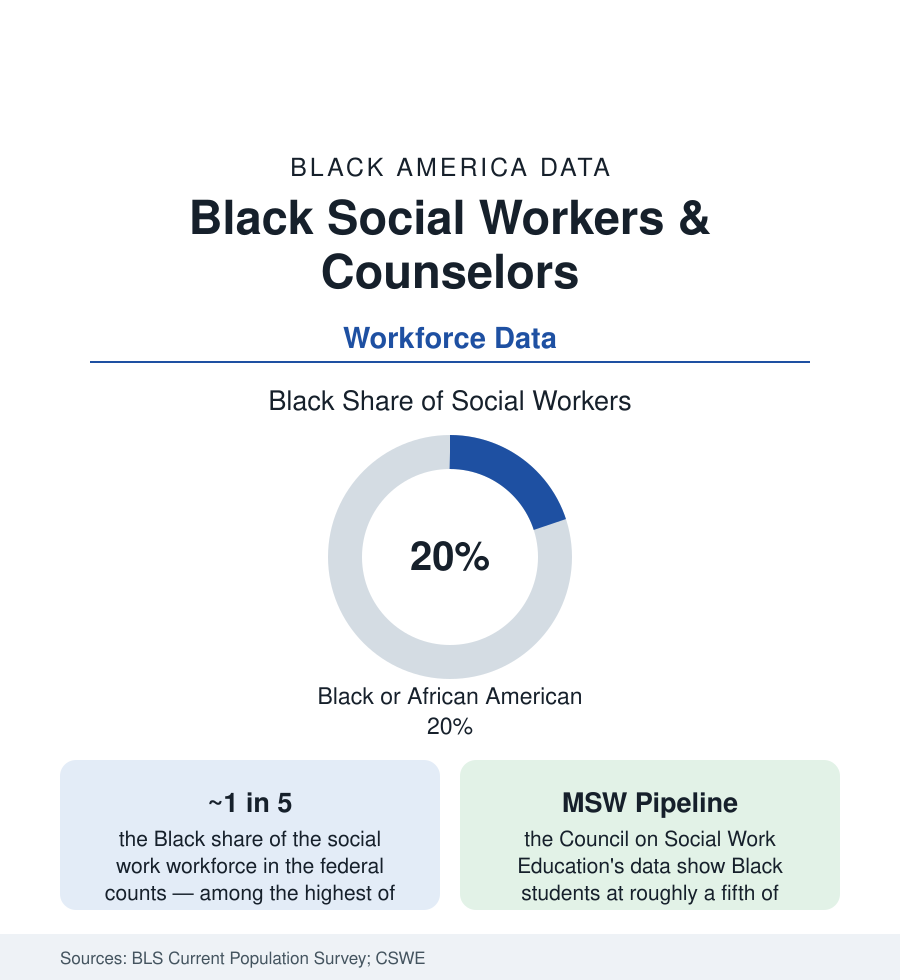

Black Employment
Black Social Workers and Counselors: The Caring Profession's Own Workforce
Black practitioners hold roughly a fifth of America's social work jobs — among the highest representation of any profession — at pay that trails the care they carry. The workforce data.

If the firehouse is the workforce where representation had to be sued into being, social work is the opposite case: Black practitioners constitute roughly a fifth of America's social workers in the federal counts — one of the highest shares of any licensed profession — and a comparable share of the counselors and therapists of the adjacent behavioral-health workforce. The profession that staffs the child-welfare offices, the hospital discharge desks, the school support teams, and the community clinics is, to an unusual degree, a Black profession. Its data carry the obvious second half: the caring workforce is paid like care is cheap. This article reads both halves.
The Composition: Where the Fifth Works
The federal and association data distribute the workforce across its settings: child, family, and school social work (the largest bloc — the child-welfare agencies' caseworkers, the family courts' and schools' support staff), healthcare social work (hospital and hospice discharge planning, dialysis and transplant teams — the medical system's navigators), mental-health and substance-use practice (the fastest-growing segment in the workforce projections), and the macro tier of administration, policy, and community organization. The educational pipeline sustains the share: the Council on Social Work Education's annual survey counts Black students at roughly a fifth of BSW and MSW enrollments, with the HBCU social work programs (among the oldest accredited, the Atlanta University school's 1920 founding in the profession's own history) as anchor producers — and the doctoral and faculty ranks thinning in the familiar pattern, though less steeply than the neighboring professions in the association data. The licensing file (the ASWB examinations) carries the current era's scrutiny: the association's published pass-rate data — first-time pass rates for Black candidates running materially below white candidates' in the 2022 release — opened a profession-wide reckoning over exam validity, with several states moving to alternative pathways in the current policy record.
The Pay and Caseload Ledger
The economics are the profession's standing grievance, documented in its own surveys: median social-work pay sits in the low-to-mid fifty-thousands in the BLS series — master's-required work priced below the bachelor's-level median of several adjacent fields — with the public-agency and nonprofit tiers (where Black practitioners concentrate) at the scale's lower half and the clinical private-practice tier at its top. The within-profession gaps follow the pattern of the earnings article: Black social workers' median earnings trail white colleagues' in the survey data, and the leadership ranks (agency directorships, deanships) run whiter than the line workforce. The caseload data give the grievance its weight: child-welfare caseloads above the professional standards in the state audits, hospital social workers covering floors at ratios the discharge data make visible, school social workers at multiples of the recommended 250-to-1 in the districts that employ them at all — the counselor article's ratio problem in its sibling profession. Burnout and turnover (the child-welfare workforce's annual churn measured in the state personnel data at crisis levels in many systems) complete a ledger in which the workforce holding the country's hardest cases is itself a retention emergency.
The Practice Difference the Data Support
The profession's presence in Black communities is not incidental to its outcomes literature: the child-welfare research on kinship placement, the hospital studies on discharge follow-through, and the behavioral-health engagement data all record versions of the concordance effect the health section tracks — families engaging, disclosing, and persisting with practitioners who share their context at rates the program evaluations measure. The community-embedded tier (the faith-based and neighborhood agencies, the school-based clinics, the violence-interruption programs staffed by credible messengers in the public-health file) extends the workforce beyond the licensed count into the paraprofessional ranks where Black representation runs higher still. The policy file follows the workforce: the loan-forgiveness and pipeline programs (the federal behavioral-health workforce funds), the interstate licensure compact spreading state by state, and the reimbursement battles (clinical social workers' Medicare recognition, the parity file) that set the profession's price in the payment system.
Reading the Social Work Data
A fifth of the workforce, a fifth of the pipeline, and the hardest caseloads in the public sector at a caring profession's discount: social work is where Black America's professional data and its community data meet in the same people. The social workers are, disproportionately, the daughters and sons of the neighborhoods in their caseloads — the data's most literal case of a community staffing its own rescue, and billing the republic a fraction of its worth.
More in Black Employment
The Black Unemployment Rate: The Two-to-One Pattern
Black unemployment runs at roughly twice the White rate — 5.5 percent against 3.3 percent in annual averages — a ratio stable across five decades of federal data. How it is measured and why it persists.
Black Median Weekly Earnings: The 80-Cent Ratio
Black full-time workers earn a median of about $900 a week — roughly 80 cents for every dollar White workers earn. The BLS earnings data by group, gender, and occupation.
Black Labor Force Participation: Working at National Rates
Black labor force participation runs at roughly the national rate — and Black women participate at higher rates than White women. The BLS participation data.
Source: U.S. Bureau of Labor Statistics, Current Population Survey; Council on Social Work Education; National Association of Social Workers; Substance Abuse and Mental Health Services Administration workforce data.